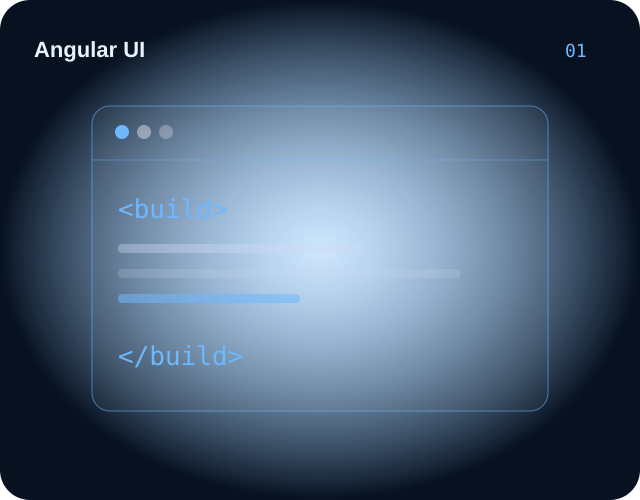
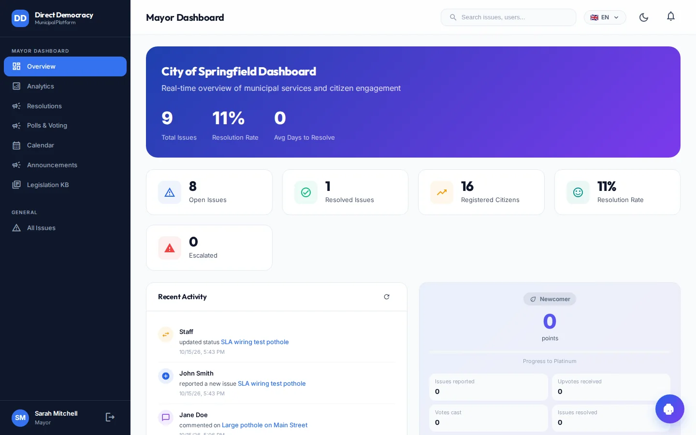
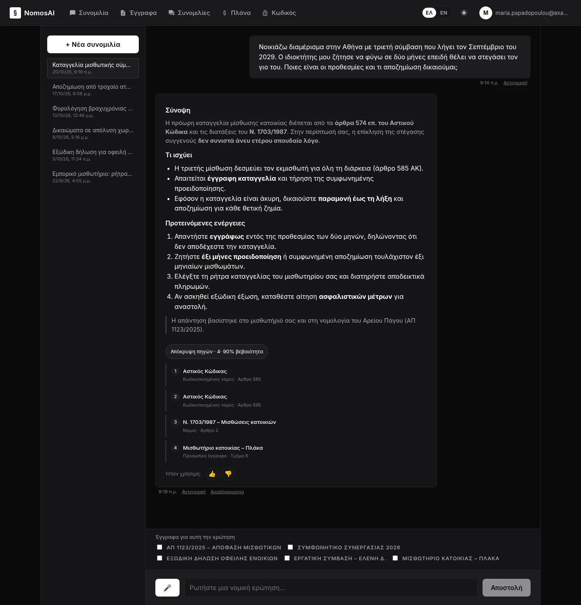
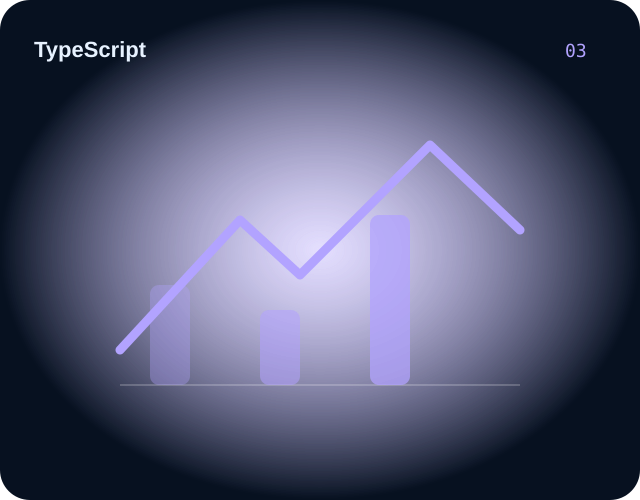
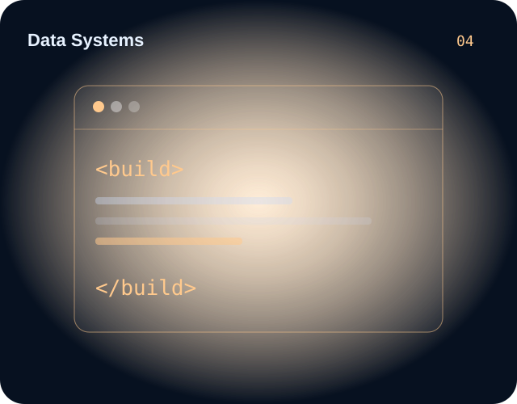

MySiteNow
Contributed to the Angular website builder as well as the public website and its integration with the platform.
AngularWebsite builderPlatform integration
Visit MySiteNow ↗A selection of platforms, client work and engineering projects spanning e-commerce, website building, civic technology and healthcare.

Contributed to the Angular website builder as well as the public website and its integration with the platform.

Mayor Dashboard for a municipal issue-tracking application, with reporting, resolutions, analytics and citizen engagement workflows.

Greek-language legal assistant interface with conversational search, document navigation and structured answers with legal references, as shown in the provided screenshot.

HealthTech engineering across patient, eConsent, specimen and access-management workflows. Stock imagery on the dedicated page is illustrative.

Developed custom e-commerce experiences using PHP and Angular, adapted to different project requirements.